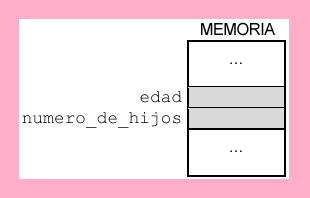
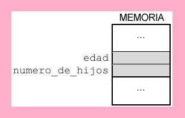
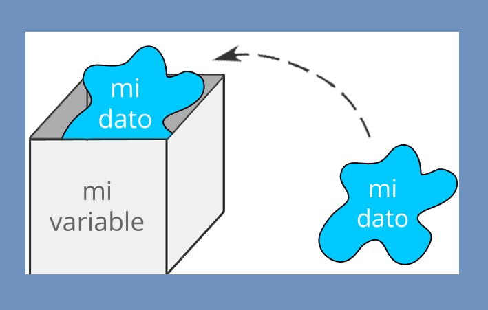
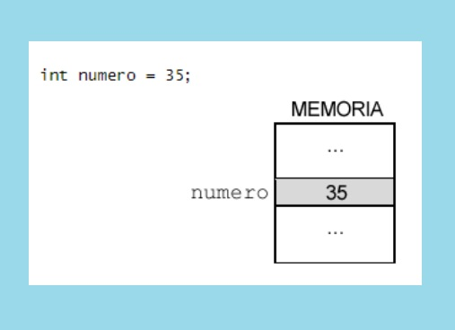
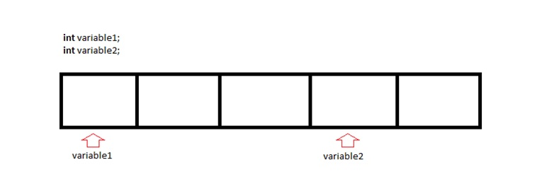
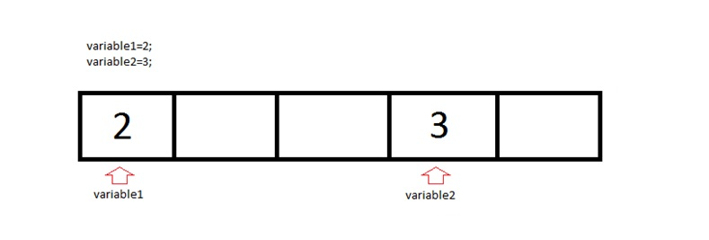
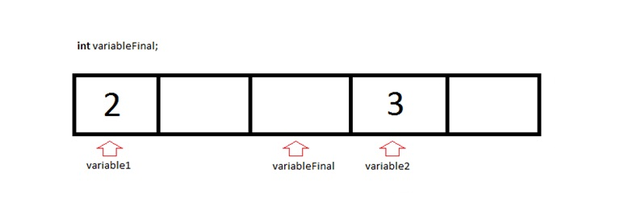
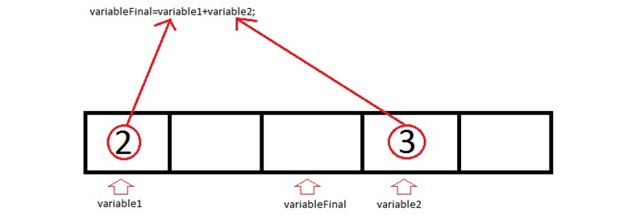
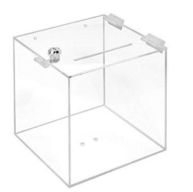

Variables
¿Qúe son las variables?
Las variables son espacios reservados en la memoria del ordenador.
La memoria por dentro es como un armario con sus divisiones (formadas por baldas, cajones, etc...) donde nosotros metemos y organizamos nuestras cosas, por ejemplo los pantalones, las camisetas, los cinturones, etc. En el caso de la memoria, las divisiones del armario, son las variables en las cuales almacenaremos datos para usarlos en nuestro programa. Cada variable, cada espacio de memoria, tiene un nombre que decidimos nosotros. Es muy útil que el nombre que elijas, tenga que ver con el uso que vas a darle al dato que vas a almacenar.
 

Tipos de variables
Si imaginamos las variables como estantes o cajas donde nosotros almacenamos cosas, los tipos de variables tienen que ver con el tamaño de ese estante o caja. No podemos hacer una variable del tamaño que queramos, existen tamaños establecidos. En programación, no es adecuado meter cosas pequeñas en cajas grandes, pues no tiene sentido que ocupe más de lo necesario ya que estaríamos desperdiciando espacio. Obviamente, no podremos meter un dato grande en un espacio de memoria pequeño, de la misma forma que es imposible que guardes la bici en el cajón de tu mesita de noche.

Como se puede observar en la siguiente tabla, tenemos los siguientes tipos de variables:
| Tipo de variable | Espacio que ocupa en memoria | Valor mínimo | Valor máximo |
|---|---|---|---|
| Boolean | 8 bits | 0 | 1 |
| Char | 16 Bits | '\u0000' | '\uffff' |
| Byte | 8 Bits | -128 | -127 |
| Short | 8 Bits | -32.768 | 32.767 |
| Int | 32 Bits | -2.147.483.648 | 2.147.483.647 |
| Long | 64 Bits | -9.223.372.036.854.775.808 | 9.223.372.036.854.775.807 |
| Float | 32 Bits | -3.402823e38 | 3.402823e38 |
| Double | 64 Bits | -1.79769313486232e308 | -1.79769313486232e308 |
De la tabla anterior, se deduce lo siguiente:
- Si nosotros queremos almacenar una palabra como por ejemplo “hola”, deberemos utilizar una caja que sea del tipo “String”.
- Si queremos almacenar un número que no sea decimal, utilizaremos una caja del tipo “Int”.
- Si queremos almacenar un número decimal, como el número PI o la altura de una persona, deberemos utilizar una caja del tipo “Float”.
Asignación de valor a una variable
Cuando nosotros asignamos un valor a una variable es como si metieramos una pelota en una caja, o un jersey en un estante del armario. En realidad lo que almacenamos son datos.
 
Operaciones con variables
Para explicar de forma comprensible las operaciones con variables, vamos a realizar paso a paso una suma de dos variables con valores enteros. La secuencia ordenada de pasos se muestra a continuación:
- Inicialización de las dos variables de los sumandos (variable1 y variable2).
- Asignación de los valores (datos) de los sumandos.
- Inicialización de la variable que va a contener el resultado (variable final).
- Ejecución de la operación.
El código escrito de cada uno de los pasos anteriores y lo que va sucediendo en la memoria según se va procesando, se podría representar como sigue:
- 
- 
- 
- 
Después del último paso, la memoria quedaría así:
Constantes
¿Qúe son las constantes?
Las constantes son muy similares a las variables, es decir: espacios reservados en la memoria del ordenador, cuyo tamaño elegimos según las características del dato que vayamos a almacenar. Los tipos de constantes definidios en un lenguaje de programación, son iguales a los tipos de variables y para su denominación se utilizan los mismos nombres.
Diferencias entre variables y constantes.
Para explicar la diferencia entre constantes y variables vamos a volver a pensar en los estantes y cajas de un armario. Podemos volver a imaginar una constante como una caja o una división de ese armario, pero con una gran diferencia respecto a la variable: ahora la tapa de la caja tiene una cerradura, o si estamos imaginando un estante, ahora tiene una puerta con llave.
Como vimos en la operación de variables, durante la ejecución del código, una variable podía cambiar su valor. Inicialmente no habíamos asignado ningún valor a la variable ValorFinal. Con la operación de suma conseguíamos asignarle un valor.
Con las constantes no se puede hacer esto, el valor de una constante lo definimos cuando declaramos la constante y ya no se podrá modificar durante la ejecución del programa. Podremos "ver" que valor hay dentro, podremos usar ese dato, pero no podremos cambiarlo. Siguiendo con la idea del armario, es como si cerrásemos con llave las puertas de nuestros compartimentos. Cuando declaramos la constante, utilizamos una palabra clave que dependerá del lenguaje de programación (por ejemplo CONS) seguida del nombre del tipo de dato que va a contener y su valor.
cons int dias_semana = 7;
Resumiendo, las diferencias principales son:
- Cuando declaramos la constante debemos asignar el valor que va a tener. Esto no es necesario hacerlo con las variables.
- Durante la ejecución, no podremos cambiar el valor de una constante. Si que es posible cambiar el valor de una variable.
Errores Comunes
Ha continuación se indican los errores más comunes relacionados con el uso de variables y constantes en programación:
Uso de variables sin haber realizado una asignación previa.
- Las variables contienen “basura” cuando las creamos por primera vez, por lo tanto, deberemos inicializar o asignar un valor por primera vez a dicha variable.
- El uso de una variable sin haber realizado una asignación previa, puede dar lugar a errores que en ocasiones son difíciles de detectar.
Asignación de un dato en una variable de tipo distinto al dato que queremos almacenar.
- Es necesario tener presente el tipo de nuestras variables. Podremos asignar un tipo de variable pequeña en una grande(en variables numéricas), pero no viceversa.
- Tampoco se puede asignar a una vsariable de tipo numérico un dato de tipo "string" (texto).